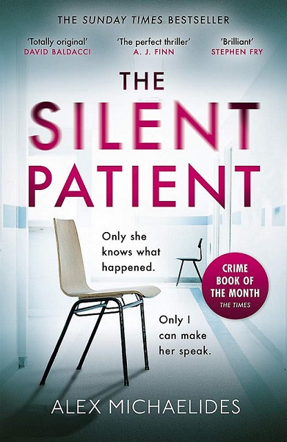
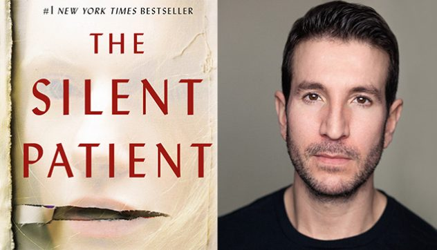

Imagine, you have a beloved person in your life, whom you called your "World", whom you treasured like a "diamond". Who was the reason for your sanity, and you can't imagine your life without them? Just thinking of not being with them makes you feel nauseated.
And then "snap", you found yourself holding a gun pointed toward your beloved person, and without thinking twice, you devastated their face and bored five holes. Confused? Disoriented?
You all will be thinking, how you can do it, if that person was like your ideal.
That's the exact question the whole novel revolves around.
Alex Michaelides’ first novel "The Silent Patient", is one of the best crime, thriller. The way Alex worked on the character and plot building, the way he expressed the emotions that we feel in our everyday life exceeds from the "first time writing a novel" experience.
He kept the readers captivating and enchanted with his profound words. Every chapter ended with just more suspense than the former.
You won't be able to put the book down unless you complete it. And here's more about this novel, to persuade you guys a little more.
Alicia Berenson, who was living an ideal life that one can dream about. She was the famous painter, with a most caring husband, because of whom she started writing, so he doesn’t worry too much about her. She can't even endure the thought of hurting him.
Until, one night, she shot her husband five times and became silent for forever. She becomes a walking statue, her eyes frozen and dark and so deep, that no one was able to reach her, except one.
Theo Faber, the forensic psychotherapist, who himself was a patient became a psychotherapist, just not to heal others but to heal himself too. He believed, there are no things like turning a good being to a murderer with just a snap.

He considered him the only person, who can help Alicia and make her talk again. He knew from the beginning, that Alicia silence, speaks volumes.
There was something about her that made him feel like he was being consumed, by her darkness. Like she knew something that can destroy him and bring his sanity out in front of everyone.
Alicia's last painting "Alcestis", after she murdered her husband, was the most crucial clue that she left, to understand her silence.
Theo digs deeper, to find the root cause of her horrendous act and find himself, revolving around the same places, again and again.
Was he able to discover the reason behind her silence or did he crossed his borderline and got swallowed into her darkness? Why was Theo so confident that he is the only one who can help her? Was there any connection between them? Were they related?
To find the answers to all these questions and to ride this journey of interesting and psychic characters, where everyone is holding some truth, get hold of your tickets here:
NYSSFEED@GMAIL.COM